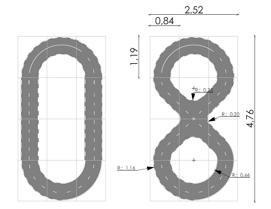

DEEP DRIVE PROJECT
This project has been done to better understand Neural network for autonomous drive and more specifically the motion control for the beginning.
We tried step by step to create a full autonomous car able to drive by itself on a road using all known regular neural network : DNN, CNN 2D 3D, RNN. also, feature selection, camera position, data Augmentation and image filtering wih or without openCV was a big part of the study.
We added more and more complex scenario to our study to improve the robustness of the car to drive by itself and understand what could be a good architecture and understand pros and cons for each soltuion tested.
here is one of the latest video of our "deep drive" car driving by itself on our homemade road :
